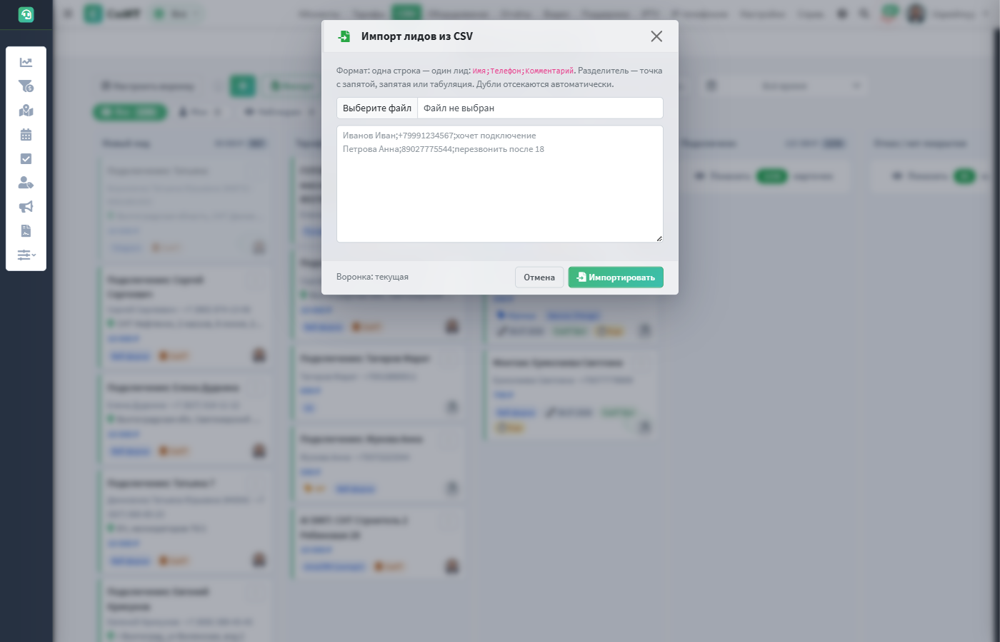
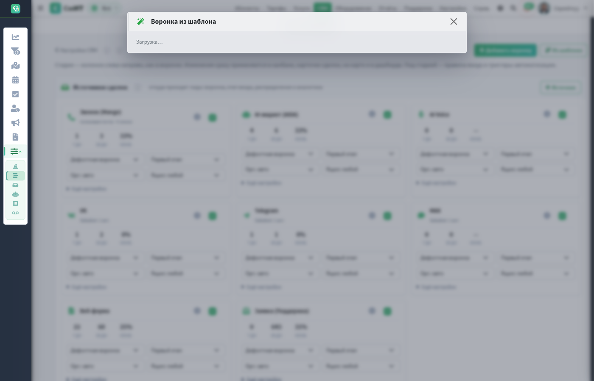
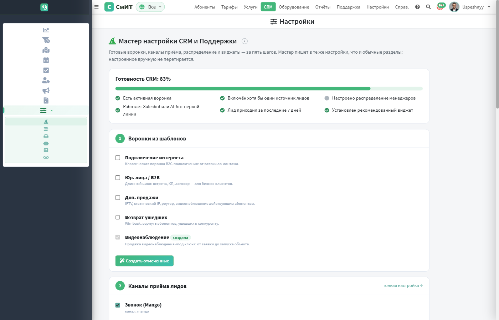
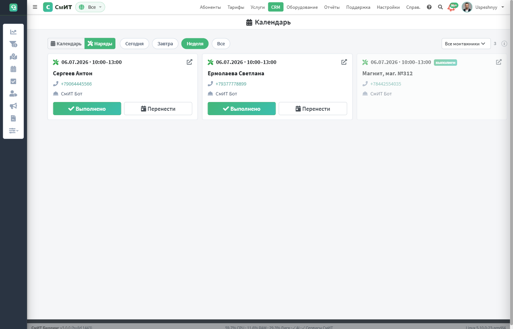
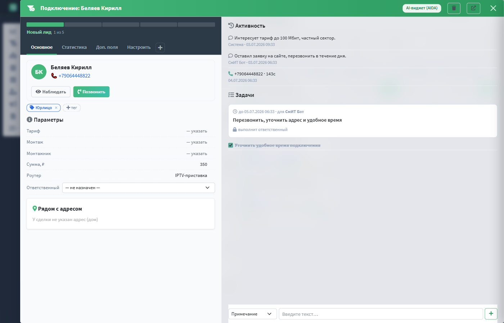
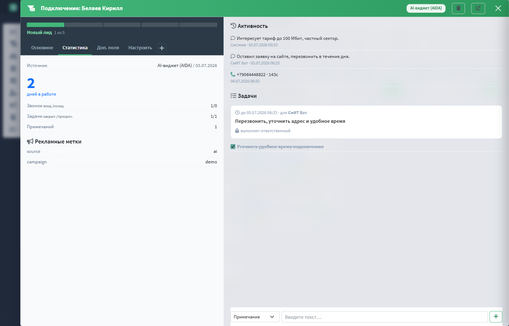

CRM (/admin/crm/) — нативный модуль работы с лидами и
сделками: канбан-воронка с настраиваемыми стадиями, конструктор триггеров-автоматизаций,
источники сделок, визуальный Salesbot, Задачи и Списки. Полностью интегрирован с
биллингом: сделка знает абонента, тариф и адрес, эскалации уходят в
Поддержку, диалоги может подхватывать
AI-агент.
Содержание раздела
- 1. Как устроен модуль
- 1а. Организация по умолчанию
- 1б. «Неразобранное» и автораспределение
- 1в. Быстрый старт
- 2. Воронка сделок (канбан)
- 3. Конструктор воронок и стадий
- 4. Источники сделок
- 5. Доп. поля сделок
- 6. Задачи
- 7. Списки (контакты)
- 8. Salesbot
- 9. Виджеты-плагины
- 10. Дашборд и карта
- 11. Рекламные кампании
- 12. Карточка сделки (дровер)
- 13. Мастер настройки
- 14. Наряды монтажника
Как устроен модуль
Все заявки — из мессенджеров, звонков, форм и почты — проходят через единую точку приёма: дедупликация по телефону, геокодирование адреса, привязка рекламной кампании по UTM, определение организации и воронки. Дальше сделка живёт в канбане, а конструктор автоматизирует рутину: задачи, SMS, документы, теги.
flowchart LR
subgraph CH["Каналы приёма"]
TG["Telegram"]
VK["VK"]
MX["MAX"]
MG["Звонок Mango
(голосовая почта)"]
AI["AI-виджет / AI Voice"]
WF["Веб-формы"]
EM["Email / Поддержка"]
end
SB{"Salesbot
сценарий"}
TG --> SB
VK --> SB
MX --> SB
SB -- "узел «Лид в CRM»" --> IN
SB -- "узел «AI-агент»" --> AIDA["AI-агент AIDA"]
SB -- "узел «Оператору»" --> SUP["Тикет Поддержки
со сводкой данных"]
MG --> IN
AI --> IN
WF --> IN
EM --> IN
IN["Единая точка приёма:
дедуп · геокод · UTM · организация"]
IN -- "настройки канала" --> SRC[("Источники сделок")]
IN --> D["Сделка в воронке"]
D -- "вход в стадию" --> AUTO["Триггеры-автоматизации
14 действий"]
AUTO --> T["Задачи"]
AUTO --> SMS["SMS / Email / Telegram"]
AUTO --> DOC["PDF-документы"]
AUTO --> TAGS["Теги"]
CRM_PIPELINE_ADMIN_GROUPS (по умолчанию: Директор, Старший менеджер,
root); остальные видят эти разделы в режиме просмотра.Организация по умолчанию
Каждая сделка привязана к организации. Точка приёма определяет её по каскаду: явно указанная организация → организация абонента → по тексту заявки (например, РоборНЭТ) → по каналу-источнику. Если ничего не подошло — сделка привязывается к организации по умолчанию (СмИТ). Сделок «Без организации» в воронке не остаётся: это касается и пропущенных звонков Mango, и нераспознанных голосовых сообщений, у которых нет абонента.
Стадия «Неразобранное» и автораспределение
Пропущенные звонки и нераспознанные голосовые сообщения попадают в первую стадию воронки — «Неразобранное». Такие заявки автоматически распределяются между сэйлсами по очереди (round-robin): каждый новый лид достаётся следующему сотруднику из группы «Сэйлс». Одновременно на сделку ставится задача-звонок «Позвонить клиенту, узнать адрес и заполнить профиль» со сроком «сегодня».
CRM_UNSORTED_AUTODISTRIBUTE (по умолчанию включено). Круг сэйлсов
берётся из групп CRM_SALES_GROUPS (Сэйлс, Старший сэйлс). Если
ответственный у сделки уже назначен — она не перераспределяется.Быстрый старт: от нуля до первого лида
Свежая инсталляция превращается в рабочую CRM за пять минут:
- Откройте Мастер настройки — шаг «Воронки» создаст стартовые воронки из пресетов (у новых инсталляций они уже созданы автоматически);
- На шаге «Каналы» включите источники приёма: формы сайта, Telegram/VK, голосовую почту; для формы скопируйте код вставки с токеном;
- Шаг «Команда» — включите распределение лидов по очереди между менеджерами;
- Отправьте тестовую заявку с сайта или добавьте лида через Импорт CSV — сделка появится в первой стадии канбана;
- Откройте сделку кликом — дровер покажет контакт, источник и UTM; двигайте сделку по полосе стадий до «Подключено», монтажнику назначайте наряд.
Воронка сделок (канбан)
URL: /admin/crm/deals/. Колонки — стадии воронки, карточка сделки
показывает то, что настроено в «Виде карточки»: клиента и телефон, адрес, сумму,
цветные теги, чипы источника/тарифа/монтажа, «дней в стадии», аватар ответственного.

- Чипы-фильтры: Все / Мои / Наблюдаю / Не назнач. — со счётчиками; плюс мультивыбор источников, поиск (имя / телефон в любом формате / адрес / текст примечаний) и диапазон дат с быстрыми периодами.
- Перенос стадии — перетаскиванием или через меню ⋮ (с клавиатуры). Переход проверяют правила входа: например, в «Назначен монтаж» не пустит без монтажника или даты.
- Свёрнутые терминальные стадии — «Подключено» и «Отказ» показывают кнопку «Показать N карточек» (в колонке — топ-60 свежих, счётчики точные по всей базе).
- Наблюдение — кнопка «глаз» в карточке: сделка помечается водяным знаком и собирается фильтром «Наблюдаю».
- Дни в стадии — чип ⏱ появляется с 3-го дня, с 7-го — оранжевый, с 14-го — красный: застой виден без отчётов.
Пример: оператор ищет «Мира 10» → находит заявку по адресу → двойной клик открывает карточку → кнопка «Позвонить» → итог звонка фиксируется прямо в карточке («Дозвонился / Не дозвонился / Перезвонить») и попадает в таймлайн.
Импорт лидов из CSV

Кнопка «Импорт» в тулбаре канбана принимает файл или вставленный текст в
формате Имя;Телефон;Комментарий (разделитель — точка с запятой,
запятая или табуляция; до 500 строк за раз). Каждая строка проходит штатный
приём лидов: дубли отсекаются, применяются теги источника и распределение
ответственного; при выбранной недефолтной воронке лиды попадают в неё. После
импорта — отчёт: создано / дублей / ошибок по строкам.
Конструктор воронок и стадий
URL: /admin/crm/settings/pipelines/ (CRM → Настройки → Воронки и
стадии). Стадии — колонки слева направо, как в воронке: название, цвет, ключ, тип
(В работе / Успех / Проигрыш), перестановка ←→, счётчик сделок. Изменения сразу
применяются в канбане, карточке сделки, на карте и в дашборде.
Жизненный цикл сделки
stateDiagram-v2
direction LR
[*] --> lead : лид из любого канала
lead --> tariff : тариф выбран
tariff --> install : Stage Gate — монтажник ИЛИ дата
install --> connected : Успех ✅
lead --> refused : Проигрыш ❌
tariff --> refused
install --> refused
connected --> [*]
refused --> [*]
note right of lead
триггеры «При входе в стадию»
срабатывают и для нового лида
end note
note right of install
«застряла N дней» — таймер-триггер
по каждой стадии
end note
Правила входа (Stage Gates)
Блокируют перенос сделки в стадию, пока условие не выполнено. Настраиваются чипами под каждой стадией:
| Правило | Что проверяет |
|---|---|
| Назначен монтажник | у сделки заполнен исполнитель |
| Указана дата монтажа | заполнено поле «Дата монтажа» |
| Монтажник ИЛИ дата | хотя бы одно из двух |
| Есть контакт (телефон) | у клиента указан телефон |
| Подтверждение оператора | перенос требует явного «Да» в диалоге |
| 🔒 Обязательные доп. поля | все доп. поля с признаком «Обязательно для стадии» заполнены (например, паспортные данные перед «Назначен монтаж») |
Триггеры-автоматизации
Кнопка «+ Добавить триггер» под стадией открывает галерею действий (как плитки).
Триггер срабатывает «При входе в стадию» (в том числе при создании лида) или
«Застряла в стадии N дней». В текстах работают плейсхолдеры
{title} {name} {phone} {stage} {days} {id}.
| Действие | Пример использования |
|---|---|
| Создать задачу | вход в «Новый лид» → задача «Перезвонить по «{title}»» на завтра |
| Telegram сотруднику | застряла в «Тариф выбран» 3 дня → пинг ответственному |
| SMS клиенту | вход в «Назначен монтаж» → «Монтаж {stage}, ждите звонка мастера» |
| Письмо клиенту | приветственное письмо с презентацией тарифов |
| Смена стадии | авто-перенос после выполнения условий (без цепной реакции) |
| Сменить ответственного | эскалация на старшего при простое |
| Примечание в сделку | служебная отметка в таймлайн |
| Webhook (POST JSON) | уведомить внешнюю систему |
| Завершить задачи | вход в «Подключено» → закрыть все открытые задачи |
| Создать сделку | после подключения интернета → сделка на видеонаблюдение |
| Изменить поле | проставить доп. поле «Согласие получено» = «да» |
| Сгенерировать документ | вход в «Договор» → PDF-договор ссылкой в таймлайн |
| Редактировать теги | добавить тег «Срочно» при застое |
| Запустить Salesbot | вход в стадию → бот собирает недостающие данные |
Вид карточки и раскладка
- «Вид карточки» — состав мини-карточки канбана: слоты строк (клиент/адрес/бюджет/дата/доп. поля), набор чипов (источник, тариф, монтаж, монтажник, организация, дней в стадии, теги), аватарка ответственного, последнее примечание.
- «Карточка» — раскладка полной карточки сделки по зонам (верх/лево/право) с ограничением блоков по ролям: например, блок «Биллинг» видят только менеджеры.
Галерея «Из шаблона»

Кнопка «Из шаблона» открывает галерею готовых воронок провайдера: подключение интернета, продажи B2B, доп. продажи, возврат ушедших, видеонаблюдение. Пресет создаёт новую воронку со стадиями, правилами входа, триггерами и причинами отказа — существующие воронки и сделки не затрагиваются. Ниже встроенных пресетов подтягиваются рецепты с сервера лицензий — новые шаблоны появляются без обновления биллинга. У новых инсталляций с пустой CRM стартовый набор воронок создаётся автоматически при развёртывании.
Источники сделок

CRM → Настройки → Источники сделок (панель вверху конструктора воронок). Источник — это запись, а не фиксированный канал: на один канал (Mango, AI-виджет, AI Voice, VK, Telegram, MAX, веб-форма, заявка из Поддержки) можно завести несколько источников — например «Лендинг тарифов» и «Форма подключения», или отдельные Telegram-источники для разных брендов. Кнопка «+ Источник» создаёт пользовательский источник.
Карточка источника
- аналитика — лиды за 7 и 30 дней и конверсия в успешные этапы за 30 дней, прямо в карточке;
- воронка и этап входа — лид падает в выбранный этап (пусто = первый этап воронки);
- организация и ящик канала (при модуле мультиорганизации) — пары «канал×ящик»: источник ловит лиды только своего бота/группы/линии, у разных брендов — свои воронки и настройки; без модуля эти поля скрыты;
- «Ещё настройки»: теги лида, распределение ответственного (логины через запятую — назначение по очереди), кампания по умолчанию, окно контроля дублей в часах (повторная заявка с того же телефона дополняет открытую сделку, а не плодит новую);
- токен — у веб-форм и AI-виджетов: заявка с
source_tokenпопадает именно в этот источник со своей воронкой и распределением; - тумблер — выключенный источник не создаёт сделки; шестерёнка — настройки самого канала (линии голосовой почты, мессенджеры Поддержки, AI-хаб).
Все источники идут через единую точку приёма: дедуп, геокод адреса, UTM-кампании и организация работают одинаково везде; у каждой сделки сохраняется ссылка на источник — на ней строится аналитика.
Источники в каталоге виджетов

Виджеты приёма заявок (Mango, AI-виджет, AI Voice, веб-формы) показаны и в каталоге Настройки → Виджеты — секция «Источники лидов»: включение/выключение источника тумблером, переходы в настройки канала и в панель источников. Виджет «Лиды по источникам» на дашборде CRM показывает топ источников с конверсией; при мультиорганизации он учитывает доступные сотруднику организации и помечает источники-пары чипом организации.
Единый приём: как заполняется карточка
Все каналы (веб-форма, AI-виджет чата и голоса, звонки Mango, голосовая почта,
VK/Telegram/MAX, Email, Salesbot, импорт CSV) сходятся в одной функции приёма
crm_intake. Она максимально заполняет карточку лида из того, что есть в
обращении, и делает это одинаково для всех каналов:
- Контакт: имя, телефон (+ нормализация), e-mail (дозаполняется
существующему контакту, если пуст), доп. телефон
phone2(явный или извлечённый из комментария); - Юрлицо по ИНН: достаточно ИНН — название, КПП, ОГРН, юр. адрес и руководитель подтягиваются из DaData; создаётся/находится компания, сделка автоматически становится «юрлицо»;
- Адрес → дом: геокодирование через DaData → привязка к
Homes(для карты) + координаты; - Тариф → FK по названию; доп. услуги — постоянный IP и число камер видеонаблюдения как структурные поля сделки (входят в «Итого»), а не текст в комментарии;
- Маркетинг: UTM-метки → авто-привязка рекламной кампании; «как узнали о нас» (referrer);
- Служебное: организация (своя/по умолчанию СмИТ), источник и его воронка/этап, дедуп по телефону, авто-назначение ответственного, теги источника, системное примечание и аудит.
flowchart LR
subgraph CH["Каналы приёма"]
F["Веб-форма"]
W["AI-виджет (чат)"]
V["AI Voice / голос. почта"]
MG["Звонки Mango"]
MSG["VK / Telegram / MAX"]
EM["Email"]
SB["Salesbot"]
CSV["Импорт CSV"]
end
CH --> INTAKE["crm_intake
единая точка приёма"]
INTAKE --> C1["Контакт: имя/тел/email/phone2"]
INTAKE --> C2["Юрлицо: ИНН → DaData
(КПП/ОГРН/адрес/директор)"]
INTAKE --> C3["Адрес → Homes + геокод"]
INTAKE --> C4["Тариф + доп.услуги
(IP, камеры) → в Итого"]
INTAKE --> C5["UTM → кампания, referrer"]
INTAKE --> C6["Орг / источник / дедуп /
авто-назначение / теги"]
C1 & C2 & C3 & C4 & C5 & C6 --> DEAL[("Сделка в CRM
карточка заполнена")]
Доп. поля сделок

URL: /admin/crm/userfields/. Панель групп слева (как разделы анкеты),
поля выбранной группы справа — с порядком ↑↓ и добавлением «+ поле в группу».
| Свойство поля | Зачем |
|---|---|
| Тип | Текст / Число / Дата / Список (варианты) / Да-Нет / Многострочный |
| Группа | секция в карточке сделки: «Договор — физ. лицо», «UTM и рекламные метки»… |
| Тип клиента | физ / юр — поле показывается только своему сегменту |
| Воронка и организация | пусто = все; иначе поле видно только сделкам этой воронки/организации |
| 🔒 Обязательно для стадии | Stage Gate: без заполнения сделка не перейдёт в указанную (и последующие) стадию |
| В списке / в превью | колонка в «Списках» / показ в карточке-модалке |
Пример: группа «Договор — физ. лицо» содержит паспортные поля с 🔒 «Назначен монтаж» — менеджер физически не сможет назначить монтаж, пока не заполнит паспорт; для юр. лиц действует своя группа с ИНН/КПП.
Задачи

URL: /admin/crm/tasks/ (CRM → Задачи). Единый список задач по всем
сделкам:
- Единая панель фильтров (обновлена в 2026-07): статус — селект (Активные / Сегодня / Просроченные 🔥 / Выполненные) со счётчиками; селект по типу задачи; SmitResponsibleSelect (аватар + Фамилия И.О.) вместо «Мои / Все» — клик по фамилии в строке подставляет сотрудника в фильтр; SmitDateRange (пресеты + календарь) вместо День / Неделя / Месяц; поиск по тексту и названию сделки. Счётчик «N задач» скрыт. Бесконечная прокрутка.
- «+ Задача» — живой поиск сделки, срок (по умолчанию завтра 9:00), тип (Звонок / Встреча / Обследование / Монтаж / Перезвонить), ответственный.
- Выполнение с результатом — кнопка ✓ спрашивает «чем закончилось»; результат сохраняется в задаче и уходит системным примечанием в сделку.
Пример потока: триггер «Новый лид → Создать задачу „Перезвонить“» ставит задачу автоматически; утром менеджер открывает чип «Сегодня», обзванивает список, закрывает задачи с результатами — вся история остаётся в таймлайнах сделок.
Списки (контакты)

URL: /admin/crm/contacts/ (CRM → Списки). Все клиенты CRM одной
таблицей:
- «Настройки таблицы» — плитки-колонки: 11 стандартных (наименование, телефон, email, источник, адрес, абонент, компания, сделок, ответственный, организация, создан) + все доп. поля. Выбор запоминается в браузере.
- Inline-редактор — двойной клик или Enter на ячейке (при наведении появляется карандаш): правка имени/телефона/email/компании и доп. полей без открытия карточки. Телефон нормализуется автоматически.
- Селект-фильтр со счётчиками (обновлён в 2026-07): вместо чипов — единый селект «Все / Абонент / Без абонента / Со сделками» с числами напротив каждого пункта. Организация показывается единым бейджем OrgBadge (favicon + акцентный цвет). Строки таблицы выровнены по верхнему краю; при наведении на бейдж «Сделок» — тултип с названиями сделок.
- Массовые действия (ответственный, сделка, удаление); клик по строке — карточка контакта со сделками и биллинг-данными привязанного абонента. Контактов «без организации» нет — новым по умолчанию присваивается организация по умолчанию (СмИТ).
Пример: маркетологу нужен срез по UTM — включает колонки «UTM source» и «UTM campaign» в настройках таблицы и выгружает картину по источникам без отчётов.
Salesbot

URL: /admin/crm/bots/ (CRM → Настройки → Salesbot). Визуальный
конструктор чат-сценариев для входящих каналов и веб-виджета: узлы перетаскиваются
по канвасу, связи-ветки тянутся мышью от кружка-выхода к целевому
узлу (живая линия за курсором, подсветка цели). Бот отвечает клиенту до
AI-агента и оператора.
Управление редактором (build 1598–1602):
- Связи — перетаскиванием: тяните линию от кружка-выхода к узлу. Клик по линии — удалить связь.
- Узлы — из палитры: перетащите плитку типа на канвас в нужное место (или клик — добавит в центр).
- Двойной клик по узлу — правка текста прямо на канвасе.
- Ctrl+Z / Ctrl+Y — отмена / возврат; Ctrl+D — дубль узла; Del — удалить выделенный.
- «Разложить» — авто-раскладка графа по колонкам; «Сетка» — привязка к сетке при перетаскивании.
- Узлы цветные по типу; красный «!» — узел без единой связи-выхода, оранжевый — недостижим от старта или пустой текст.
- Канвас редактора занимает всю ширину рабочей области — больше места для крупных сценариев.
✨ AI-помощник. Кнопка «AI» в тулбаре: опишите словами, что должен делать бот («приём заявок: поприветствуй, спроси адрес и телефон, создай лид, поблагодари»), — Claude соберёт готовый граф узлов. Результат применяется на канвасе (откат Ctrl+Z), проверьте и нажмите «Сохранить».
flowchart TD
IN["Входящее сообщение
Telegram / VK / MAX / Веб-виджет"] --> HOOK{"Salesbot"}
HOOK -- "активный диалог" --> RUN["следующий шаг сценария"]
HOOK -- "первый контакт
(канал в автозапуске)" --> START["стартовый узел"]
HOOK -- "бот не назначен /
пауза 6 ч после диалога" --> AIDA["AI-агент"]
AIDA -- "не справился" --> TK["Тикет оператору"]
START --> RUN
RUN --> B1["Сообщение с кнопками
(в Telegram — настоящие inline)"]
RUN --> B2["Вопрос → сохранить ответ"]
RUN --> B3{"Условие: слова /
рабочее время / телефон"}
RUN --> B4["Лид в CRM
в воронку бота"]
RUN --> B5["Передать AI-агенту"]
RUN --> B6["Оператору: тикет-сводка
собранных данных"]
| Узел | Что делает |
|---|---|
| Сообщение | текст + кнопки; у кнопки — синонимы для свободного текста («подключить, интернет»); ветка «Другой ответ» ловит нераспознанное |
| Вопрос | ответ сохраняется: имя / телефон / адрес / любое доп. поле |
| Условие | ключевые слова · рабочее время (часы) · «в ответе есть телефон»; ветки Да / Нет |
| Действие | любое действие автоматизаций CRM (задача, SMS, теги…) |
| Лид в CRM | сделка из собранных ответов — в воронку и организацию бота, через единую точку приёма (дедуп, геокод, SMS-подтверждение) |
| Проверка ответа | валидатор: телефон (нормализует в +7…) · email · число · regex; ветки «Валидно / Невалидно», при ошибке — переспрос |
| Распределение | назначить ответственного сделке (round-robin / случайно по логинам операторов); ставить после «Лид в CRM» |
| AI-агент | передача диалога AIDA; при сложном вопросе AI сам эскалирует оператору |
| Оператору | эскалация: собранные данные уходят тикетом-сводкой в Поддержку |
| Картинка | отправить изображение по URL с подписью (поддержка
{{переменных}}) |
| Задать переменную | сохранить значение в память сессии
({{имя}}) — используется дальше в текстах и уходит в лид |
| Тег сделке | навесить тег на сделку сессии (ставить после «Лид в CRM») |
| Вебхук | HTTP POST на внешний URL с собранными данными
({bot, session_id, deal_id, channel, collected}) |
| Уведомить оператора | Telegram-уведомление операторам с подстановкой
{{переменных}} (напр. «Новый лид {{name}}, тел {{phone}}») |
| Переход / Стоп | прыжок на другой шаг / завершение сценария |
Пример — сценарий «Приём заявок» (стартовый шаблон):
- Приветствие с кнопками: Подключиться · Нет интернета · Оплата и баланс · Другой вопрос.
- «Подключиться» → адрес → имя → телефон (условие проверяет, что это телефон) → Лид в CRM → «Заявка принята 🎉».
- «Нет интернета» → условие «рабочее время 9–18»: днём — живая передача дежурному, ночью — бот записывает проблему и оформляет заявку на утро.
- «Оплата» → ссылка на личный кабинет + кнопка «Нужен оператор».
- «Другой вопрос» → передача AI-агенту.
В тулбаре редактора: каналы автозапуска (Telegram/VK/MAX/Виджет), воронка для лидов, организация (multi-org: бот СмИТ не отвечает клиентам бота другой организации), тумблер «Включён» и «Тест» — симулятор диалога на живом движке, работающий и с несохранённым сценарием. После завершения диалога бот 6 часов не здоровается заново — клиент спокойно общается с AI или оператором.
Веб-виджет на сайт
Включите канал «Виджет» в тулбаре — бот станет доступен на внешнем
сайте как чат-виджет (кнопка-пузырь в углу → окно диалога с кнопками-ответами).
Кнопка «Код виджета» выдаёт готовый сниппет для вставки перед
</body>:
<script src="https://rbill.smit34.ru/static/js/salesbot_widget.js"
data-bot="3" data-title="Онлайн-консультант"
data-color="#43b77a" async></script>Параметры: data-title (заголовок), data-color (цвет),
data-pos="left|right" (угол), data-greeting (приветствие).
Виджет гоняет тот же сценарий через публичный движок /api/crm/bot/<id>/
(CORS, лимит 30 сообщений/5 мин), гость запоминается между сессиями. Соберите ответы
узлом «Лид в CRM» — заявки придут в воронку бота с источником web.
Виджеты-плагины

URL: /admin/settings/widgets/ (Настройки → Виджеты). Каталог
загружаемых расширений: новый виджет публикуется на сервере лицензий и появляется
у всех инсталляций без обновления биллинга, с фильтрацией по тарифному плану.
sequenceDiagram
participant A as Администратор СмИТ
participant L as Сервер лицензий
participant B as Биллинг клиента
participant P as Страница (дашборд CRM)
A->>L: загрузка zip-пакета виджета
B->>L: каталог по лицензионному ключу
L-->>B: список виджетов тарифа (+SHA-256)
B->>L: скачать пакет
B->>B: сверка SHA-256, распаковка
только фронтовых файлов
P->>B: страница с точкой монтирования
B-->>P: widget.js + контейнер
P->>P: SmitWidget.register() → рендер
Пакет — zip с манифестом и фронтовым кодом (серверный код в v1 не исполняется):
{
"slug": "funnel-summary",
"name": "Сводка воронки",
"version": "1.0.0",
"entry": "widget.js",
"description": "Счётчики сделок по стадиям — прямо на дашборде CRM."
}// widget.js — контейнер уже в DOM, settings — из настроек установки
window.SmitWidget.register('funnel-summary', function (el, settings) {
fetch('/admin/crm/deals/json/?type=' + (settings.type || 'internet'))
.then(r => r.json())
.then(d => { el.innerHTML = /* счётчики по d.counts */; });
});На плитке каталога: версия, размер, точка монтирования, кнопки Установить / Обновить / Удалить и тумблер вкл/выкл. Первая точка монтирования — дашборд CRM (виджет «Сводка воронки»), далее — карточка сделки и карточка абонента.
Версия, «Подробнее» и автообновление
Плитка виджета показывает бейдж версии справа от названия (зелёный — установлен и включён, жёлтый — доступно обновление, серый — доступен в каталоге). Кнопка «Подробнее» открывает модалку с обложкой, полным описанием и вкладками «Возможности» / «Как это работает» / «Скриншоты» — так же, как у карточки модуля (данные приходят из расширенного каталога сервера лицензий).
Обновление по умолчанию ручное: у виджета с более новой версией в
каталоге появляется кнопка «Обновить». Тумблер
«Автообновление виджетов» в тулбаре
(WIDGET_AUTO_UPDATE_ENABLED, по умолчанию OFF) включает ежесуточное
авто-обновление всех установленных виджетов. Аналогичный тумблер
«Автообновление модулей» — на /admin/settings/modules/
(MODULE_AUTO_UPDATE_ENABLED), там же версия модуля показана бейджем рядом с
названием. Полное описание политики версионности и автообновления —
в разделе СОРМ → Версионность и обновления.
Точки монтирования и стандартные виджеты
- Дашборд CRM — «Сводка воронки»: счётчики сделок по стадиям;
- Карточка сделки — «Рядом с адресом»: сколько абонентов уже подключено в доме сделки и в радиусе 300 м — аргумент для продажи;
- Карточка абонента — «CRM и Поддержка абонента»: его сделки и обращения одним блоком; виджеты этой точки встраиваются карточками прямо в грид «Быстрый доступ»;
- Дашборд биллинга — «Лицензия и модули»: тариф с обложкой, статус и срок лицензии, версия сборки, включённые модули.

Встроенные карточки «Быстрый доступ»
Шесть карточек в карточке абонента (Аудит, Услуги и бонусы, Операции, Обращения, Сообщения, Сессии) — тоже виджеты: в каталоге они показаны в секции «Встроенные карточки» и включаются/выключаются тумблером для всех сотрудников сразу. Удалить встроенную карточку нельзя — только выключить; персональная видимость из настроек профиля продолжает действовать поверх.

Мастер настройки

URL: /admin/crm/setup/ (CRM → Настройки → Мастер настройки).
Пять шагов приводят CRM в боевое состояние: воронки из пресетов, каналы приёма
заявок, команда и распределение лидов, AI-бот Поддержки, рекомендованные
виджеты — каждый шаг применяется одной кнопкой и пишет только в существующие
настройки. Чеклист «Готовность CRM» из шести живых проверок (есть воронка,
работает источник, настроено распределение, включён бот, пришёл свежий лид,
установлен виджет) обновляется после каждого шага.
Наряды монтажника

URL: /admin/crm/montazh/ — вид «Наряды» календаря
(переключатель «Календарь | Наряды» на обеих страницах). Мобильный сценарий
«мой наряд на день»: назначенные монтажи карточками — дата и окно времени,
клиент, телефон одним касанием, адрес со ссылкой «маршрут», тариф и комментарий.
Просроченный наряд помечается красным. Кнопка «Выполнено»
переводит сделку в стадию «Подключено» её воронки прямо с телефона и оставляет
системную заметку; «Перенести» сдвигает дату с причиной.
Монтажник (группа installer) видит только свои наряды и не может
закрыть чужой; менеджеру доступны все наряды и фильтр по монтажнику.
Дашборд и карта
URL: /admin/crm/. KPI, блок «На карте» — геопривязанные лиды и монтажи
с фильтрами (диапазон дат / Все / Мои / Наблюдаю) и полноэкранным режимом. Тултип
маркера: аватарка + Фамилия / Имя Отчество, телефон, стадия, адрес. Цвет маркера —
по стадии сделки.

Рекламные кампании
URL: /admin/crm/campaigns/. Кампании и каналы с UTM-метками:
линк-билдер + QR-код, привязка сделки к кампании по utm_campaign в
момент приёма (единая точка всех каналов), дашборд CAC (стоимость привлечения).
Карточка сделки (полноэкранный дровер)

Одинарный клик по карточке канбана открывает сделку дровером на весь экран. Слева — «паспорт сделки»: полоса-прогресс стадий (клик по сегменту переводит сделку), контакт с телефонами и адресом, параметры, абонент биллинга, обращения в Поддержку, мини-карта адреса и виджеты точки «Карточка сделки». Справа — лента: суть заявки, активность, задачи и композер внизу.
Вкладки левой панели:
- Основное — контакт (основной и доп. телефон, e-mail, кнопки «Наблюдать» / «Позвонить»), параметры сделки, связь с биллингом;
- Подключение — выбор тарифа, поле «Стоимость подключения» (по умолчанию 12 000 ₽), месячная стоимость тарифа и «Итого». Общая сумма сделки считается как стоимость подключения + месячная плата тарифа и обновляется прямо при вводе;
- Статистика — источник и дата, «дней в работе», счётчики звонков/задач/примечаний, история стадий, ответы Salesbot и все UTM-метки заявки;
- Доп. поля — группы кастомных полей со счётчиком заполненности;
- Настроить — включение блоков карточки для всей воронки; кнопка «+» добавляет новую группу полей, не выходя из сделки.

Задачи в ленте — карточками: видно, до какого времени и для
кого поставлена задача; поле «Добавить результат» и кнопку «Выполнить» видит
только ответственный. Новая задача из композера требует дату/время и
ответственного. Дубли: если у клиента есть другие открытые
сделки с тем же телефоном, над лентой появляется плашка «Возможные дубли» —
кнопка «Объединить» переносит заметки, задачи, звонки и теги в текущую сделку
(id: дубль удаляется, в сделке остаётся системная
заметка). Прямые ссылки вида /admin/crm/deals/<id>/
автоматически открывают канбан с этим дровером.